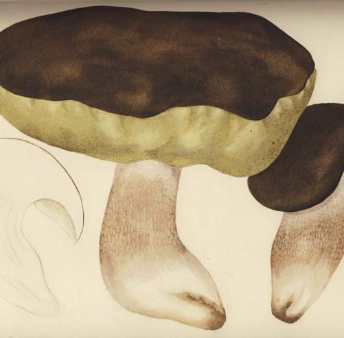
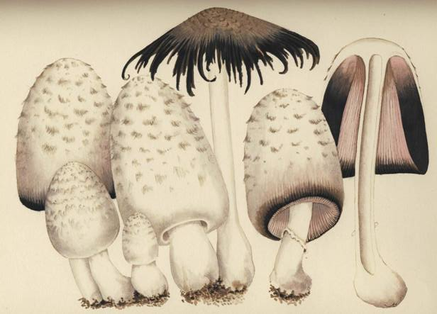
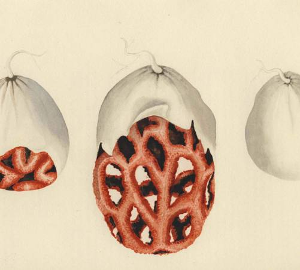
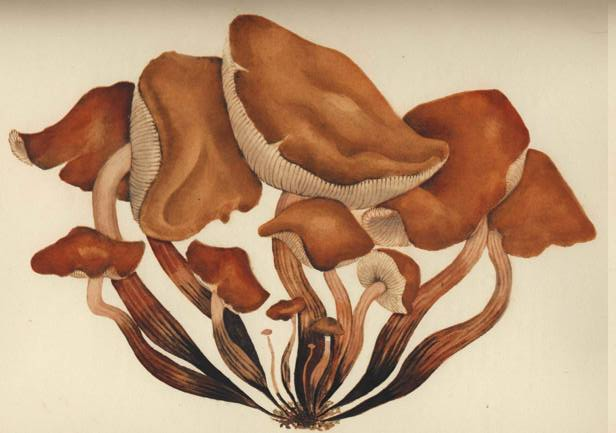

Mushrooms... the poor man's food, the rich man's dainties.
I CANNOT recall the time when our mother first began to send us out into the woods and fields to gather mushrooms for the family table. In the summer of 1909, when I was almost eight and my sister was nearly seven, we were spending our summer holidays at a village called Majorenhof, near Riga on the Baltic Sea. We were surrounded by pine groves, the ground carpeted with needles and with blueberry and bilberry bushes. What a delight it was for Tanya and me to ramble through the clean, fragrant woods, filling our baskets with those aristocrats of the mushroom world, the noble belye griby \
We were already proficient mushroom gatherers then, and we must have begun our apprenticeship long before. Our mother, Xenia Dimitrievna, was even more solicitous about her brood than most mothers, yet it never occurred to her to poison our young minds with warnings about 'toadstools'. All Russians know the mushrooms, not by dint of study as the mycologists do, but as part of our ancient heritage, imbibed with our mother's milk. A Russian nursery rime, tenderly humorous, tells of the mother who sends out her toddler to look for the borovik. Each time he returns with the wrong kind, perhaps a good kind, perhaps bad, but never the borovik. Each time she repeats her previous instructions, adding however an additional line of descriptive advice. In the end, off goes Mother herself, impatiently, and there, almost on her doorstep, she discovers a family of the ones she seeks.
We Russians love the whole mushroom world, and what a world it is! Almost endless in variety, every species expressing its individuality by its size and shape and stance, in the beauty of its evanescent colors, in the delicate perfection of its gills or pores or skin that are a joy to touch, and usually too in its scent and taste. The evil kinds, how they flaunt their wicked grace, like the harlots that they are! But we are fond even of them, in a way. Where is death more plainly writ than in the greenish pallor of the elegant amanita phalloides, the 'destroying angel' 2 Where is to be found a better portrait of the Scarlet Woman than in Europe's amanita muscaria, the 'fly amanita'2 (As ofttimes happens with scarlet women, worse things by far are said of this dazzling wanton of the mushroom family than she deserves.) Mushrooms there are, such as the clathrus cancellatus, so strange of line and hue that he who for the first time sees them is struck incredulous: can such things really be?
This love of Russians for the earthy tribe of mushrooms is, I suggest, a distinctive trait of the Slavs and a significant one. In the face of an ever mounting flood of printed matter and talk about Russia, that land remains for the English-speaking world as deep an enigma as ever. If among those who seek the key to the enigma there be some with an understanding heart and a poet's insight, let them lay aside for a while most of what is written and uttered, and consider the lesson in Russian history and Russian ways that the mushroom has to teach. Here is evidence of our visceral attachment to the bounteous soil that is our Mother Russia. In America, the hospitable land of my adoption, we sing hymns to our rocks and rills, to our wooded hills, but many, I think, sing with their voices and not with their hearts, for our rills we pollute and in our great paper mills we are speedily converting those wondrous forests into the stuff of which comics are made.
In France and Italy the peasants know many of the mushrooms and possess a rich vocabulary for them. The Germanic peoples are less informed than the French, and there is evidence that what they know is of modern acquisition. But when the traveler reaches the lands of the northern Slavic peoples and the Lithuanians, the folk knowledge concerning mushrooms broadens and deepens until it reaches astonishing proportions. The Russians find it as natural to know the mushrooms and to avoid the deadly kinds as do most Americans to distinguish poison ivy from other creepers. Take our family for instance. We were Muscovites. My parents belonged to the Russian intelligentsia, and were city bred. We children spent most of our childhood in the immense cities of Moscow and St. Petersburg, and only our vacations in the country. Yet to no one in all Muscovy could it have seemed strange that Tanya and I, and all our little playmates, made ourselves useful, when in the country, by gathering various kinds of mushrooms and bringing them home in childish rivalry and glee to the kitchen. When we were naughty, our mother would punish us by forbidding us to go mushrooming.
PLATE I
Jean-Henri Fabre. Boletus edulis Fr. ex Bull.
French: cepe de Bordeaux; German: Steinpilz;
Italian: porcine; Russian: belyi grib.

PLATE II
Jean-Henri Fabre. Coprinus comatus Fr. ex Miill.
French: pisse-chien.

The Catskill Mountains in August are filled with mushrooms, exquisitely beautiful. (We Russians are always finding mushrooms wherever we go, even where our American friends tell us there are none.) In 1927 I had just married my American husband, and we were spending our first holiday in the lodge of Adam Dingwall, a friend, near Big Indian. With what astonishment my husband saw me, on our first walk, dart with ecstasy to this fungus and that, and on bended knee strike what seemed to him poses of adoration! With what horror he strove, unsuccessfully, to keep me from bringing home and eating a mess of fragrant lisichki! He behaved, as we both at once perceived, like the hen that has hatched ducklings and sees them swim away.
An absorbing work, perhaps rich in historical significance, needs to be written on the role of the mushrooms in the life of the peoples of Europe. There are already many scientific treatises on mycology, as the study of the fungi is called, but none on the cultural implications of the mushroom world in the history of our European ancestors. For every region there should be determined which
mushrooms are familiar to the people of the locality, and what names they
use, and how they prepare them for food, and the folklore attaching to them.
Our theme is elemental, reaching back into the folkways of pre-history, and
such a mushroomic map of Europe might well confirm folk-ties hitherto mere-
ly suspected, and disclose others. If only one could travel today throughout
the Slavic lands in the mushroom months, traveling close to the moist Mother
Earth, gathering mushrooms with the peasants, identifying them by their local
names, eating them according to local recipes, assembling the folklore about
them, and trying to catch their delicate beauty of line and color with paint
and brush! When I was a child, anyone with the inclination and leisure could
have indulged in this idyllic pursuit to his heart's content.
To what a world of wonder and delight the fungal vocabulary of Russia
transports us! Every mushroom, good or bad, comes under the general name
of grib. When the farm-boy of the American prairies returns home after a hard
day hungry for his 'grub', he is using in all likelihood a word with the same
origin as the Russian peasant child who gathers his griby in the woods. Both
words go back to a prehistoric root of the Indo-Germanic tribes that expressed
the scratching and stirring and rooting and grubbing of the soil which gave
to primitive man his vegetable food. Our archeologists piece together mean-
ings deduced from the rubbed and worn artifacts of peoples who died long
before the spoken word could be committed to posterity by writing. But the
very words that those peoples spoke also come down to us, Likewise rubbed
and worn, their sounds and meanings slowly changing on the tongues of num-
berless generations, yet still identifiable. In the linguistic cousinship of 'grub'
and the Russian grib we see one example, out of an infinite number, of the
common cultural heritage that unites at the deepest levels the Slavs and the
West, kindred stock of one great Indo-European family.
Of the poisonous mushrooms, only one species in the Russian language bears
a common name - the mukhomor or fly-killer, the amanita muscaria of science.
In America this knave wears a yellow cap necked with warts, but throughout
Europe its color is a splendid red, and only one blind to nature's warnings could
be seduced by its meretricious allurements. All merely tasteless or insignificant
mushrooms we dismiss with affectionate contempt under the term poganki,
the 'unworthy ones' or, as some interpret the word, 'little pagans'.
On the lowest level of culinary value we lump together a miscellaneous lot
of gilled mushrooms by the name syroezhki. They can be eaten raw, as the name
says, though seldom are they so eaten. To this humble group rightly belongs
the common field mushroom, a poor thing owing its undeserved renown to
a weakness in its character that makes it unique - it alone in the mushroom
world of Europe and America stoops to man's will by lending itself to
commercial cultivation in a big way.[1] Among Great Russians, this people pre-
eminent in 'mycophagy' or mushroom-eating, the field mushroom enjoys little
standing, not even possessing today a commonly used native name, being called
champignon after the French. When gathered fresh in breeze-swept pastures,
it still possesses traces of distinction, but through mass production on shelves
in darkened cellars under controlled and uniform conditions the market product
has long since lost such virtue as its wild ancestors once had, until today it is
truly the slattern of the mushroom world, a sickly simulacrum of what mush-
rooms should be. (Actually, the cultivated mushroom and the field mushroom
belong to different though closely related species. The beginnings of commercial
cultivation offer a minor mystery. The French discovered the secret around
Paris, whence the name champignons de Paris, but the exact time is unknown.
There is a reference to them in Le jardinier fran^ois, a book by N. de Bonnefons
published in 1651. It seems likely that the art had sprung up in the previous half
century. When Francis Bacon assembled his data for his Sylva Sylvarum, pub-
lished in 1626, this well informed Englishman had never heard of cultivated
mushrooms, for he wrote that a strange property of mushrooms is 'that they
come up so hastily, as in a night, and yet they are unsowne'. It is clear also that
John Parkinson when he wrote his Theatrum Botanicnm, published in 1640, was
similarly unaware of the procedures for inducing field mushrooms to grow.)
Of the distinguished mushrooms, the first to appear in the spring of the
year are the smorchki, or morels. They are not uncommon in America too, but
in the New World they are gathered and relished almost solely by transplanted
sons of Europe. This is especially remarkable since no one could mistake so
distinctive a mushroom, standing erect as it does with its honey-combed top-
knot exposing its windows to the breezes.
Through summer and fall the variety of succulent mushrooms that Russians
gather is considerable. In ascending order of excellence, we begin with the
opjonki, the mushrooms that nourish on dead tree stumps. These are of various
kinds, but the classical opjonok, or opjonka, is the common ink-cap, a delicate
and lovely mushroom, the perfect expression in color and texture and line of
transitory grace. For the span of a few hours these beautiful creatures, their
highly convex bonnets supported on spindly legs, toss jauntily in the air, and
then, by the action of their own enzymes, they curl up and dissolve into inky
fluid. Large numbers often grow in a single colony, each day bringing forth a
new generation. They must be cooked the instant they are gathered. More sub-
stantial is a second kind of opjonka, the armillariella mellea of the mycologists.
Large and fleshy, they lend themselves to drying.They too grow in family clusters,
but less populous than the ink-caps; in Italy the peasants by happy inspiration
call them, with an affectionate diminutive, the Holy Family - famigliola buona.
The mushrooms with a moist and sticky surface, which the English-born
person is quick to scorn as "slimy', the Russians by a reverse semantic twist
praise as the 'buttery ones'- the 'fat-of-the-earth', as Samuel Collins, erstwhile
physician to the Tsar, put it in his book, The Present State of Russia, published
in 1671. These are the masljonki and masljaniki of the Russian kitchen, from
the word maslo, meaning butter. Perhaps somewhat higher in the scale of merit
are the Hsichki and the ryzhiki - the 'little foxes' and the 'rusty ones'. The former
are the chanterelles of the West. Few are the sights that nature offers more
gladdening to the eye of man than a colony of chanterelles on the shaded floor
of an evergreen forest, their brilliant yellow cups spattering a carpet of dry,
dun-colored needles. True, they dance not, but for Russians they laugh like
dancing daffodils. With fluted stems, they look like yellow parasols, blown
inside out. Good as they are to eat, their beauty in their native setting transcends
their taste. With Russians the chanterelle holds a more humble place in the
hierarchy of mushroom values than among some of the Western peoples who
know their mushrooms less well. The folk of Norway and Sweden - countries
that abound in mushroom life - think of the chanterelle as the one edible
mushroom of the forests, which goes to prove that an abundance of mushrooms
does not suffice to bring about familiarity with them. The chanterelle is common
in America. It is pungent and unpalatable until cooked.
For the table, in my opinion, the chanterelle must yield pride of place to
the ryzhik - identified by the lexicons with the lactarius deliciosus but in fact
embracing several of the edible lactarii - a fleshy mushroom whose funnel-
shaped cap is handsomely marked by concentric rings of red. We Russians
love our ryzhiki. This is the famous mushroom that we gather in immense
quantities and eat with affection and gusto. We prepare it in many ways, but
chiefly we like it salted and pickled. By tradition the various Finnish peoples
are not mycophagous, but the peoples of Finland and Estonia have learned
from the Russians in modern times to harvest the ryzhiki of the forests and add
them to the family menu. Ryzhik, as we have said, means the 'rusty one',
a name derived from the color of the cap. At the other end of Europe the
Catalans in their language have hit on the identical figure of speech: thus the
rovello of Barcelona is our ryzhik - the word means the same thing, and the
mushroom is almost the same. The Catalan prizes this mushroom highest of
all: he honors it above the cepe de Bordeaux. He puts his mess of rovellons into
a frying pan of very hot oil, and on top of the mushrooms he adds tomatoes
and garlic and parsley and sausage made from pork, and after cooking the whole
for ten minutes or less over a slow fire, he sits down to a dish that he considers
fit for the gods. In Spanish the name of this classic mushroom is the mizcalo,
apparently a pre-Latin word, indigenous in Iberia, its verbal kinships lost in
antiquity. The very antiquity of this word bears witness to the hold that the
mushroom has on the people of Castile. The peasants in the noble Sierra de
Credos, to the west of Madrid, know the mizcalo well: they harvest it regularly
and sell the crop to gentlemen who come out from Madrid to buy it for re-sale
elsewhere in Spain and abroad.
As I said before, the lexicons tell us that the ryzhik is the mushroom known
to science as the lactarius deliciosus. I shall let this identification pass for the
present, merely remarking that a strange confusion bedevils the terminology
here, a confusion that must be laid at the door of a naturalist who blundered.
Later I shall try to untangle the error.
The gruzdi are another famous mushroom tribe in northern Russia. This is
the name properly belonging to the large, white, fleshy lactarius piperatus,
but apparently some Russians also use it for other lactarii and even some rus-
sulae. The word itself is peculiar to the Russian language (including White
Russian and Ukrainian), being unknown elsewhere in the Slavic world. It is
an honored name in our mushroom vocabulary, though rather for its role in
folklore and proverbs, where the gruzd' is the captain of the mushroom host [2]
than as a table delicacy.
With the ryzhik and the gruzd' we leave behind the whole tribe of gilled
mushrooms and ascend the scale of values to the best varieties of the numerous
genera of boleti. These are the mushrooms that, instead of radial gins on the
underside of the cap, display sponge-like pores. Two of them that are esteemed
by all Russians are the berjozovik (or podberjozovik) and the podosinovik, and
concerning them there is a singular fact to be disclosed.
In recent times the mycologists of the West have discovered that an intimate
tie of mutual help links certain mushrooms to certain kinds of trees, each of
such mushroom species being thus related to one or more kinds of trees. These
mushrooms may assume a slightly different appearance according to the kind
of tree the individual specimen lives with. For this relationship to be understood,
one must keep in mind that the mushrooms we see in woods and fields are
merely the fruit thrown to the surface when all conditions are right: the life
of these elementary organisms goes on chiefly underground; indeed, in the
case of truffles, entirely so. Just as the therapeutic potency of certain moulds
has been discovered only in this century, so the importance of mushrooms in
life's great round begins now to be discerned. We know that the rootlets of
many trees are often locked in symbiotic embrace with the subterranean 'my-
celium' of the mushroom, and for this intimacy the mycologists have invented
their special word - 'mycorrhiza', from the Greek words for fungus and root.
The painstaking observations of mycologists have proved that between the
birch tree and the boletus scaber there is such a relationship, and similarly
between the aspen and the European boletus rufus. Now it is an arresting fact,
of which mycologists in the West are usually unaware, that the folk names in
Russian for these very species of mushrooms are keyed to those same trees:
the berjozovik lives with the berjoza, or birch tree; and the podosinovik grows
under the osina, or aspen. The berjozovik is the boletus scaber, and the podosinovik
is the boletus rufus. The scientists now confirm what the peasants of Eastern
Europe have sensed from time immemorial. The berjozovik, incidentally, is
abundant in America, but in my opinion the true podosinovik does not occur
here, and those that are gathered and eaten as such by Russians in the United
States belong to other species somewhat resembling the red-capped aspen-
mushroom of Europe. There is also in Russia a rare blue-capped podosinovik,
whose scientific name I do not know: it would be interesting to identify it,
to see whether the mycologists have yet confirmed its link with the aspen tree.
Ranking above all the mushrooms so far mentioned come those aristocrats
of the mushroom world, the belye griby or 'white mushrooms', known to the
French as the cepes de Bordeaux and to the mycologist as the boletus edulis.
These are the most famous of common mushrooms, the delight of epicures,
the 'cep' of English gourmets. The Russians call them 'white', not primarily
because their flesh is white, but because in the Russian language 'white' con-
notes excellence.
And right here we come upon another of the strange parallels in fungal
imagery that recur between peoples geographically and culturally remote from
one another. We have seen that both the Russians and Catalans speak of cer-
tain lactarii as the 'rusty ones'. Now we observe that the Basques of Guipuz-
coa, Upper Navarre, and the Labourd refer to the dun-colored cep as the 'white
mushroom', just as the Russians do, the Basque term being ondo zuri. We have
said that 'white' connotes excellence, but perhaps this is an understatement.
There is an abundance of evidence that the primitive peoples of the Eurasian
land mass, no matter how different culturally, were prone to associate whiteness
and brightness with divinity, with the 'White Goddess' (as Robert Graves
calls this creature), who possessed myriad shapes and names. Is it possible that
in the 'white mushroom' of the Russians and Basques we discover a survival
of a primitive divine kinship>
Truly senatorial in girth and mass, the splendid white mushroom or cep is
supreme in fragrance and taste. It lends itself to pickling and drying, so that it
keeps indefinitely and then may be served in soups and sauces. This is the mush-
room that Russians used to eat in Lent in lieu of meat: little wonder that no one
shrank from Lenten fare![3] This is the mushroom, packaged in cellophane envelopes, that is to be found on sale in the little Jewish food shops of New York.
(How lovable are those shops, in the immense variety of their stores and the
warmth of the welcome that the owners, hailing as they almost always do
from Eastern Europe, extend to appreciative customers, and especially to
Russians!) During the recent war with Germany, the importation of these
mushrooms was interrupted, but new sources sprang up in Chile. The quality,
however, was not the same, and with the return of peace, the flow of mushrooms
from Poland and Italy was resumed. In New York there is one firm, the Reliable
Mushroom Company in Rivington Street, that confines its business to dealing
in these imported dried mushrooms. In November 1948 I priced the various
grades that Mr. Fessel was offering: the shredded Chilean mushrooms were
$2.75 a pound and the Italian were $4.00; but the long and handsome strings
of dried Polish ceps were $6.00. In December 1950 the Polish product had risen
to $8.00, and for caps alone (the stems being considered inferior and removed)
the price was $12, but a year later, in October 1951, the market for these caps
had fallen to $8.
In New York the cep is for sale only in its desiccated state, though it grows
throughout the wooded countryside; and those who know it only dried will
never divine the delicacy and richness of its taste when pickled in brine, or
marinated, or preserved by boiling and sealing in jars, or better far, when fried
fresh in butter, or, finally and best of all, sauteed in sour cream.
I respectfully suggest to the Wine and Food Society that some day they
arrange to serve to their members, artfully prepared, a selection of all the
mushrooms I have mentioned, accompanied of course by appropriate wines,
and I predict that by a vote resembling a Soviet election the choice will run
to the incomparable belye griby. I am not unmindful of the difficulties in arran-
ging such an extraordinary culinary event. All the mushrooms must be served
fresh, to do them all equal justice. A generous mess of the most ephemeral -
the opjonki - would have to be rushed in at the last moment from close by,
of course with motorcycle escort, sirens whining. A chef would be cooking
them in a chafing dish en route. Other kinds of mushrooms would hail from
Europe by plane. The chef in charge would thoroughly understand the per-
sonality of each of the kinds, and possess the skill to evoke its proper character.
Nobly served, what a memorable spread we should have, and what a tribute
to the folk-cookery of the Slavs!
I have one more name to add to the honor roll of the Russian mushroom
world. If the belye griby are the aristocrats of that world, then the serene dignity
of Prince must be bestowed on the borovik. By ancient tradition and common
consent, it leads the roster. The Czechs, who vie with us in our enthusiasm
for it, call it the Regal Mushroom, or hfib krdlovsky. Some Frenchmen know it
too. They use for it various names - tete de negre, cepe polonais, gendarme noir, and
cepe bronze. The name that the mycologists use is boletus asreus. Apparently it
does not occur in the New World.[4] It is rare in Russia, so rare that many
Russians apply the famous name erroneously to its close relative, the belyi grib.
Perhaps it is not a distinct species, but only a variant of the other, a variant
linked symbiotically with some kind of pine tree, for bor means pine-forest. The
borovik owes its supreme rating with us to its rarity and to its breathtaking
beauty: its 'head' (for one refrains from speaking of the 'cap' of such a majestic
creature) is a deep brown approaching black, and in size and weight and stature it is the equal of the belyi grib. In fragrance and taste, perhaps only the
most knowing epicures can distinguish the two, but however closely related the
two kinds may be, and however much they look alike, to the borovik belongs
the dignity of first place in the whole mushroom world.
The Russians never discuss the weather to make conversation, and our lack
of interest in golf scores and sporting events generally, both amateur and pro-
fessional, is complete. But mushrooms are different. They are not only raw
material for the kitchen, they are a theme for endless discussion. They are ever
present in our minds, even when we are not discussing them. They are so
taken for granted that Russian authors seldom stop to discuss them systemati-
cally. But references to them are scattered everywhere in Russian literature -
in poetry, fiction, essays. Three times in Anna Karenina does Leo Tolstoy bring
them into his narrative, and the episodes, for the perceptive reader, are extra-
ordinarily revealing. In one, a nursery full of tearful little children is turned in
an instant from tears to joyous excitement with the announcement that they are
to go mushrooming. The second episode, for our purpose, is even more start-
ling. A land-owner is preparing to propose to a girl he loves, and with this
intention goes into the woods to join her where she is gathering mushrooms.
But he never gets to the point of proposing, for they begin by discussing mush-
rooms, and though both are longing to speak of love, once they are on mush-
rooms, like a cracked record they cannot get off that subject! In Appendix I
we offer to our readers a rendering of these two passages from Anna Karenina.
The third episode, though slight, is perhaps the most touching. The land-owner
Levin goes out into his fields, where his peasants are mowing the hay, to join
them in their labor. The day is hot and long and the work is hard, but they
all press on to finish a big stint. As twilight comes they find themselves cutting
grass among the trees of a wood where birch-mushrooms abound, big fellows
that have fattened on the moist humus of the grassy places. In their rhythmic
sweep the scythes cut the mushrooms as well as the grass. Levin, exhausted
though he is by his unwonted effort, nevertheless notices that the oldest of
the peasants, a grand old man who excels all the others in grace and endurance,
never fails to lean over and pick up the mushroom that his blade has severed,
then tucking it away in the fold of his blouse. "Another present for my old
woman," he says. His scythe does not miss a single blade of grass, nor does a
single mushroom escape him.
PLATE III Jean-Henri Fabre.
Clathrus cancellatus Lin. ex Tournef.

There are delightful verses about mushrooms in the poems of two of Russia's
more accomplished poets, Lev Alexandrovich Mej and Viktor Vladimirovich
Khlebnikov. I like particularly Khlebnikov's apostrophe to the mushrooms of
the forest. The poetic virtue of his lines is lost in this literal translation:
Here are syroezhki and the russet ryzhik
With raspberry blood,
Yellow gruzd'', round and shaggy,
And you, pecheritza,
Simple and white like snow,
And the firm white ones with the thick caps.
The 'firm white ones' are ceps of course, the thick-capped belye griby. Of special
interest is Khlebnikov's description of the ryzhik as 'raspberry-blooded'. All
the lexicons say that the ryzhik is the lactarius deliciosus, a mediocre mush-
room that exudes saffron drops. It is clear that the ryzhik of Khlebnikov is a
variant, a lactarius that drips raspberry blood - malinovaja krov'.
Yet another Russian author, Sergej Timofeevich Aksakov, late in his life
wrote about mushrooms in a lovely essay that is little known. It merits atten-
tion for several reasons, and hi Appendix II we present what we believe is the
first translation of it.
The addiction to mushroom gathering is not a badge of politics or ideology.
There was Aksakov, a superb figure of Old Russia. But there was also Lenin,
whose fanaticism brought endless woe on Russia and the world, but whose
dedication to wild mushroom hunting during one brief spell shows him hi a
more winning light. His wife Nadezhda Krupskaja wrote in a letter hi 1916
that he pretended to know nothing about wild mushrooms and to care less,
but in fact he was seized at that time with a veritable passion for mushroom
gathering. (He was possessed of a razh', as she put it.) One day hi that fateful
summer of 1916 they were hurrying along a mountain trail near Zurich to
catch their train. A drizzle soon turned into a downpour. Suddenly among
the trees Lenin caught sight of ceps. At once he turned aside after them, paying
no attention to the wet. "We were drenched to the very marrow of our bones
and of course missed our train." He did not quit until his sack was full and his
razh' was quenched.[5]
By the Russian scale of values, all the wonderful golf courses of vast America
are inviting more for the mushrooms that grow on them and in the woods
along their well-tended borders, than for the game. You can always tell a
Russian when you see her hi wooded country: she progresses slowly, stooping
and peering to right and left, with a low, circular, sweeping glance, as though
she has lost something. She is armed with a hamper and a walking stick to
poke here and there; and she springs forward occasionally with a happy pounce
and kneels to gather in the prize.
When the Russian child learns his alphabet, he sees by a picture that 'g'
stands for grib; this has been habitual at least since the zyth century. In his
primer he reads of mushrooms. In his school he is like to find a playmate whose
family name is taken from some mushroom, a boy named Gribov, for example,
or a Gribunin, or a Borovikov, or a Gruzdjov, or aRyzhikov, or an Opjonkin, or
a Syroezhkovskij, or a Lisichkin. The Maslenikovs are common, but that name
might also be derived from the trade of the butter-churner. I am told that in
Russia there are even Mukhomorovs, but I myself have never run into this
equivocal name. In the time of Catherine the Great there was a famous painter
named Borovikovskij, and a generation later the leading playwright was
Griboyedov, 'Mr. Mushroomeaterson'. Was there ever such a name in English,
or a Mycophagenes in ancient Greece ? In English the only parallel that I recall
is the fine old medieval family name of Norman origin, still current I believe, of
Muschampe, named after some field or meadow famous for its mousserons or
mushrooms. At the imperial University of St. Petersburg there used to be a
professor of law named Gribovskij who would sign his articles with the pseudo-
nym 'Muketov', thus giving a Greek twist to his Russian name.
Before long the Russian youngster learns by heart the stanzas of the childish
mushroom marching poem, 'Panic among the Mushrooms'[6], wherein Colonel
Borovik, Commander-in-Chief of the mushroom host, summons his minions
to war. The red-coated mukhomory decline to serve, for they are senators. The
beljanki say no, for they are aristocratic ladies and exempt. The opjonki refuse,
since they must do duty as ladies-in-waiting. The morels beg off, for they are
gray-headed oldsters. The maslyata say they are needed in the factories, the
ink-caps point to their spindly legs, the volnushki call themselves old dowagers,
and the lisichki profess to be nuns. The ryzliiki are just simple peasant folk
and useless as soldiers, and the volui duck their duty by reminding the Colonel
that they are nothing but the village loafers. Then up step the valiant gruzdi,
willing fellows, who will gladly go to war and smite the enemy. And so, with
a loud 'Oo-rah! oo-rah! oo-rah!', off they march. These stanzas with their
shrewd comments on the diverse species are the didactic and mnemonic device
by which a people's rich mushroom lore is passed on to the next generation.
Based I think on them, I recall a children's ballet and chorale impersonating the mushroom population; was it not composed by Cesar Cui, or perhaps Rebikov? The Czech composer Leos Janacek near the end of his opera, Li ska Bystrouska, 'The Cunning Fox', has the Forester sing a lovely aria to the mushrooms as he goes through the woods.
No people talk and write more, or more enthusiastically, about good food
than the Russians, and soon or late their conversation turns to mushrooms.
Has the season been good ? Who has found the biggest lot of the best kinds ?
What about the best ways of preserving and cooking > In the Russian language
the common term for a warm, soft rain in summer is 'mushroom-rain' -gribnoi
dozhd' - used even when mushrooms are not under discussion. Among the
country-folk, by immemorial right, the peasant who discovers a spot where
morels or 'white mushrooms' abound, enjoys thereafter a first claim on the crop
in that area. City folk who summer in the country eye one another furtively
on their mushroom sorties, like rival spies intent on each other's secrets, and
those who hit on good colonies often guard their secret jealously. The Czechs
are also notable fanciers of mushrooms, vying in their enthusiasm with the
Russians, and the Poles do not lag far behind. The outstanding Polish poet,
Adam Mickiewicz, in the third book of his masterpiece, Pan Tadeusz, devotes
some lines of unforgettable beauty to the gathering of wild mushrooms. But
as a Russian I remark that he pays obeisance only to the Hsichki, the boroviki,
and the ryzhiki. Of the others he goes on to say that the people despise them.
Not thus does a Russian speak. Another Pole, Stanislaw Trembecki, a conspi-
cuous literary figure in the Polish classicist period in the late i8th century, penned
an astonishing diatribe against mushroom-eaters. He was a learned crank, to
be sure, but belligerency on this theme has no parallel among Russians, not
even Russian cranks.[7] Of course it is wrong to generalize from the utterances of
intellectuals, and the peasants of Poland may well be free from the mycophobia
that has infected Polish men of letters, but we are constrained to point out that
as early as the iyth century that eminent Polish poet, a master of the baroque
school, Waclaw Potocki, in 'The Unweeded Garden' discusses wild mushrooms
at some length, and the tenor of what he says is that mushrooms are an esoteric
business, best left to the few who know the secrets!
Close to forty years have passed since I last gathered mushrooms in Russia,
and reveled in the mushroom lore that we all shared. As I re-read the lines I
have written, I become aware of receding planes of memory, on the periphery
of my consciousness, strewn with visions of mushrooms that I can no longer
identify by name, and with names of mushrooms that are no longer attached
to clearly defined images. What were those beljanki that refused to go to war
because they were aristocratic ladies? The volui of the poem - vol means 'ox',
and these are therefore 'bovine-mushrooms' - were, I remember, a lowly
species, unwholesome until cooked, and utilized only in the absence of anything
better. Then there were the volnushki, which might mean the 'wavy ones',
but are more likely another 'bovine' species; the sinjushki or blue-capped ones;
the svinushki or swine-mushrooms; the bolotovik or swamp-mushroom; the
dubovik or oak-mushroom; and the elovik or balsam-mushroom. There was the
mokhovnik or moss-mushroom. There was a big, ugly mushroom that grew
in isolation and was never gathered: the kozjol or goat. The puff ball was the
Devil's pepper-pot - chortova perechnitza. There was thegolubetz or pigeon mush-
room, and the obabka, of which only the name floats uncertainly to me. From
earliest childhood I recall another curious name - the skripitza, or screeching
mushroom: what could it have been? Gogol's immortal character in Old World
Squires, Pul'kheria Ivanovna, once started to tell how to preserve in vinegar a
mushroom that she called the travjanka. She had just reached the point where she
had lined her keg with oak leaves and saltpeter and added some blossoms of
the bird-cherry tree, the Russian cherjomukha, which the botanists call the padus
avium, when she was diverted. (What can the world do about mischievous
Persons from Porlock?) Never shall we know the rest of that enticing recipe,
but someone at least can identify for us the travjanka.
PLATE IV Jean-Henri
Fabre. Collybia fusipes Fr. ex Bull.

One of the loveliest mushroom stories is the legend about their origin that
we find in Bohemia, which we retell from the recension recorded by the Czech
folklorist, Mrs. Bozena Nemcova.[8] It seems that Jesus and Peter were passing
through a Czech village and heard the sound of wedding music in a humble
cottage. They joined the party, but not before Jesus had warned Peter to accept
no food save only bread and salt, for the people were poor. Jesus and Peter were
made most welcome. They partook of the bread and salt that were offered to
them, declining however the cakes [koldce]. But a little later, when no one was
looking, Peter slipped some cakes into his pouch. After a while Jesus and Peter
continued on their way, Jesus immersed in his thoughts and Peter lagging
behind, that he might nibble on his cakes. But at each bite, Jesus would wheel
around and ask him what he was eating. Peter would spit out the mouthful and reply, "Nothing." This happened again and again, until there was no cake
left. Then Jesus said to Peter, "Go back, and pick up all that you have spat out,
and I will wait for you." When Peter returned he said to Jesus, "I found nothing
except this that I show you. I thought it was food, but lo! it was a growth,
rooted in the soil." Jesus said, "It is a growth, and it grew from the food you
threw away." Then Peter asked for forgiveness, and it was granted to him.
Then they went to the cottage of a poor woman and asked her to cook what
Peter had found, and it turned out to be mushrooms, and they were good. Be-
cause the mushrooms had sprung from the food of poor people, Jesus bestowed
them on the poor, and he taught the poor woman where to seek them. And be-
cause poor people need help, mushrooms multiply and abound. And because
Peter, eating them, nevertheless remained hungry, mushrooms are not filling.
When we consider how gingerly even mycologists in America ofttimes handle
the run of miscellaneous mushrooms gathered in fields and woods, the self-
assurance of Russians as they by-pass the poisonous and foul-tasting ones, and
grade the others according to their edible merits, and consume these wild
mushrooms with impunity as an important ingredient in their daily diet, seems
astonishing to other peoples. Here is a notable instance where folk-wisdom
anticipates and overreaches the savants. I have surely strained the patience of
my readers with the Russian vocabulary that I have recalled for the mushroom
tribe, but there must be an endless glossary of other names that I have forgotten
or never known. The wealth of the Russian nomenclature for the mushrooms
is a measure of the role they have played in the social history of the Russian
people. The names evoke for Russians the edible qualities of the various kinds,
but semantically they refer primarily to the habitat and essential character
of the species. Several of the folk-names for mushrooms in the Russian language
could have come into acceptance only after age-long intimacy. The scientific
nomenclature of the Western mycologists, devised over the past century, is
superficial by comparison with some of the Russian common names, the
pseudo-classical terms of the scientists being keyed often to accidental attributes,
the aspects that the untutored eye of the early mycologist first remarked.
In the English language the very word 'fungi' is an ugly, half-assimilated
alien, detached and cold in its emotional personality; and apart from it there
are in the common speech only 'mushroom' for the species that lends itself
to cultivation and 'toadstool' of evil aura. 'Toadstool' has no precise meaning,
but in ordinary usage it embraces all the wild mushrooms that the person born
in the English-speaking world does not know and therefore fears and loathes.
It is a word that most of those who love mushrooms refrain from using. Even
if viewed as a fanciful term, it is inept, surviving only through the inadvertence
of a great people whose attention has been elsewhere. With this single word
'toadstool', soaked in condescension and repugnance, the English-speaking world
lumps together and dismisses without a second glance some of the richest and
most varied embroidery doing honor to wild nature's glorious vesture.
[1] We are aware that the Italians in certain localities raise the clitocybe catinus and the polyporus tuberaster, but only on a modest scale. In Japan, however, the cultivation of the excellent shiitake is as important as the champignon industry in the West.
[2] There is the famous proverb: Nazvahja gruzdjom, polezaj v kuzov; which is to say, "If you call yourself a 'gruzd', into the basket you go!"; in other words, "If you give yourself airs, take the consequences."
[3] These mushrooms were allowed by the Russian Church during all fasting periods save Holy Week - a subtle line of demarcation in religious discipline that will delight all amateurs of ethno-mycology.
[4] A European mycologist has reported finding the borovik in Florida. See 'The Boletoideae of Florida', by Rolf Singer, in The American Midland Naturalist, January 1947, pp. 22-24. Until others confirm his findings, I hesitate to accept them.
[5] This curious episode is told by N. Valentinov in his Meetings with Lenin (Vstrechi c Leninym), Chekhov Publishing Co., N. Y., 1953, p. 211.
[6] The Russian name is Perepolokh sredi gribov. It exists in many variants and can be found in many Russian anthologies.
[7] The attack on mycophagists appeared posthumously in an article entitled Pokarmy [Food], edited from the writer's autograph by Franciszek Grzymala and published in Astrea, Pamlftnik Narodowy Polski, Warsaw, 1822, Vol. n, pp. 136-152. It was republished in Pisma tvszystkie, edited by Jan Kott, Warsaw, Panstwowy Instytut Wydawniczy, 1953, Vol. n, pp. 206-7.
[8] Ndrodni bdchorky a povesti, Prague, 1880, vol. n, pp. 302-4.